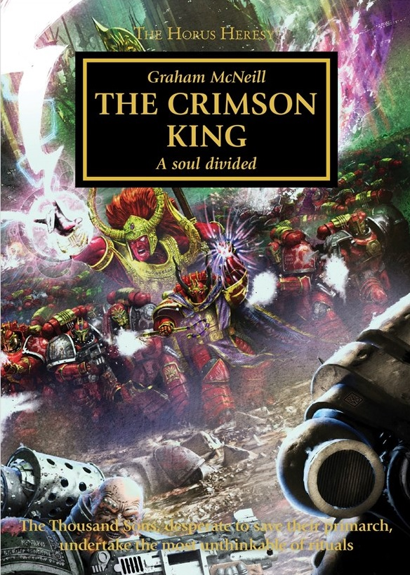

THE CRIMSON KING

Author: Graham McNeill
Format: Novel
The Thousand Sons have escaped Prospero, but Magnus is fracturing under the weight of what happened there. His Legion searches for a way to restore him before they lose their primarch.
Introduction reviewed against Black Library’s description on 2026-09-27. The publisher page may contain spoilers.
Publication facts: publisher source, checked 2026-09-26.
Open this work in the interactive Archive to track reading progress and explore related works.